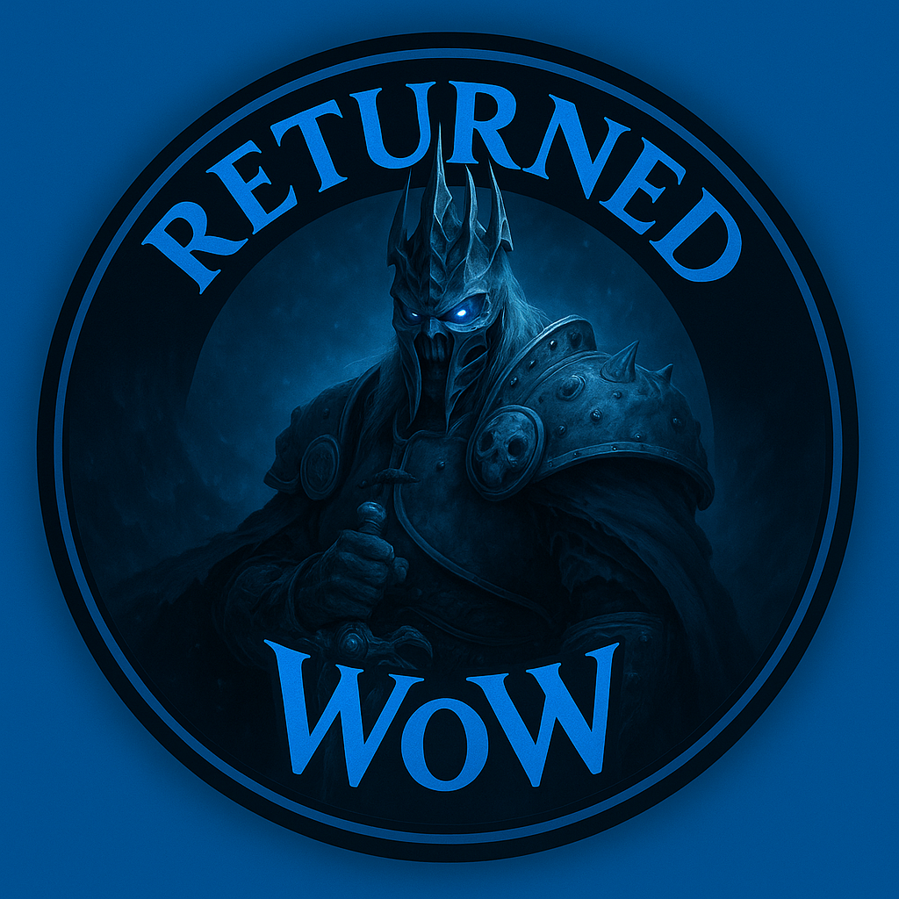

Bem-vindo ao informativo do servidor Returned WoW.
Servidor privado brasileiro de World of Warcraft 3.3.5a, totalmente gratuito e com uma comunidade ativa. Aqui nós não apenas jogamos – forjamos memórias inesquecíveis!
Sua jornada aguarda, faça o download do jogo e crie a sua conta.